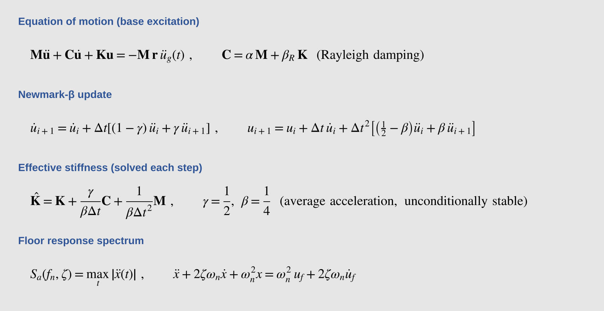
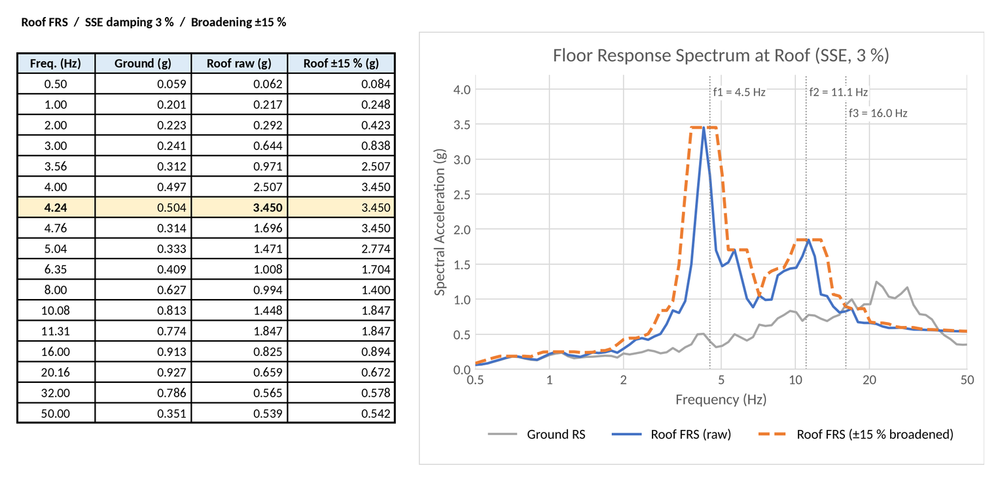

Equipment in a nuclear power plant is not shaken by the ground motion directly but by the motion of the floor it is installed on. The building filters and amplifies the earthquake, so the floor response spectrum (FRS) is generated from a time history analysis of the building: the absolute acceleration at each floor is applied to SDOF oscillators from 0.5 Hz to 50 Hz, and their peak responses form the raw spectrum. To account for uncertainties in the structural frequencies, RG 1.122 calls for the spectrum to be smoothed and its peaks broadened, typically by 15 % on each side, before it is used as the design FRS for equipment.

The building response is calculated by direct integration of the equation of motion under base excitation. The Newmark-β method with γ = 1/2 and β = 1/4 (average acceleration) is unconditionally stable, so the time step is chosen for accuracy rather than stability. It is a widely used implicit scheme and is also available in ANSYS Transient Structural analysis. Damping is modeled with Rayleigh damping, C = αM + βK, with coefficients fitted to give 7 % damping at the first and third modes, the SSE value for reinforced concrete structures in RG 1.61. A time step of 0.001 s is used, which is small enough to resolve the 50 Hz upper limit of the FRS.

A 3-story shear building (floor masses of 800, 800 and 600 t) with natural frequencies of 4.5, 11.1 and 16.0 Hz is subjected to the synthetic ground motion used on the SRS Analysis page (PGA 0.30 g). The peak roof acceleration is amplified to 0.53 g. The roof FRS is generated with 3 % damping, the SSE value for equipment qualification (2 % is used for the OBE). It has sharp peaks near the building frequencies, with a maximum of 3.45 g at 4.24 Hz, about seven times the ground spectrum at the same frequency. Broadening the peaks by 15 % on each side widens the 3.45 g plateau to about 3.8 to 4.8 Hz, so that equipment designed with this FRS is not sensitive to small errors in the building frequency.


Try the SRS Analysis Tool